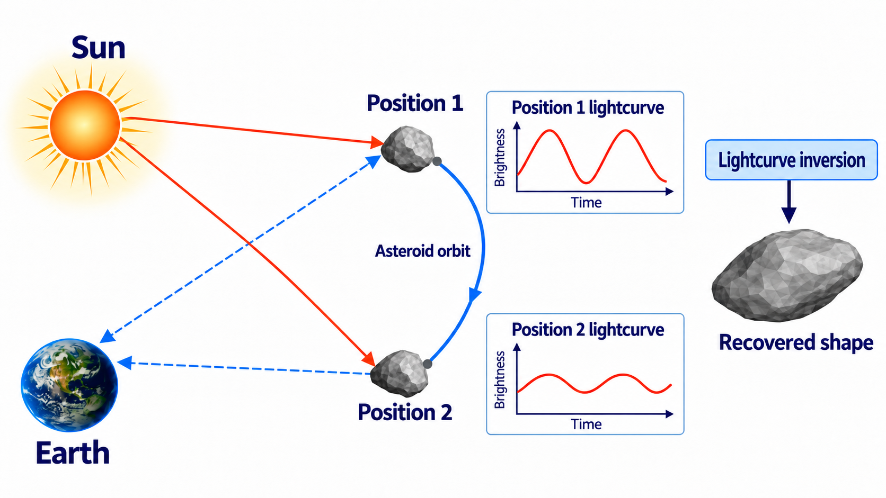
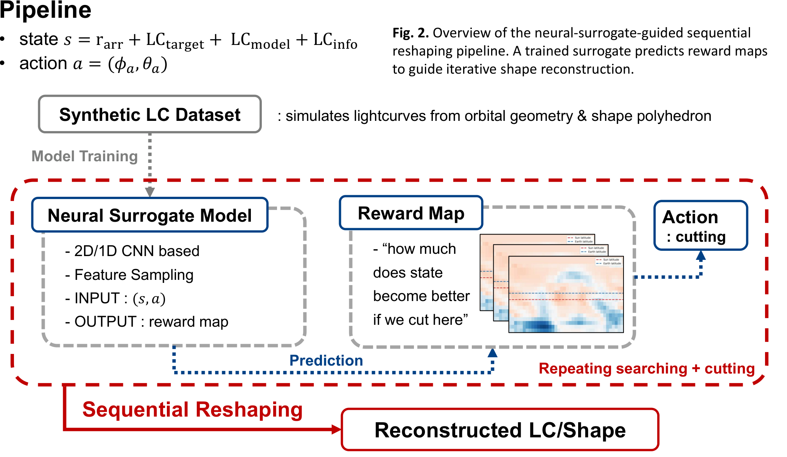
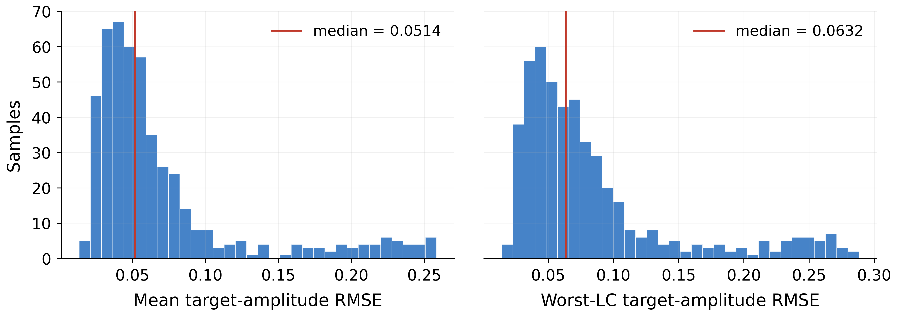
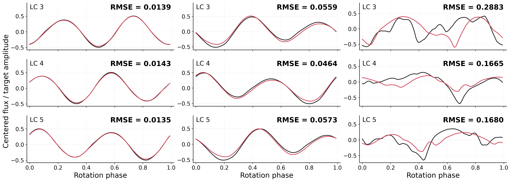
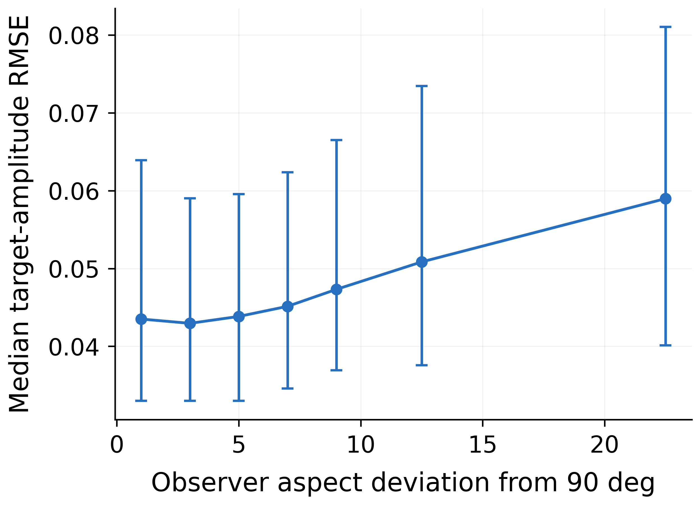
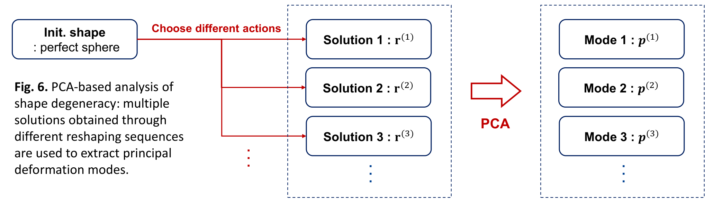
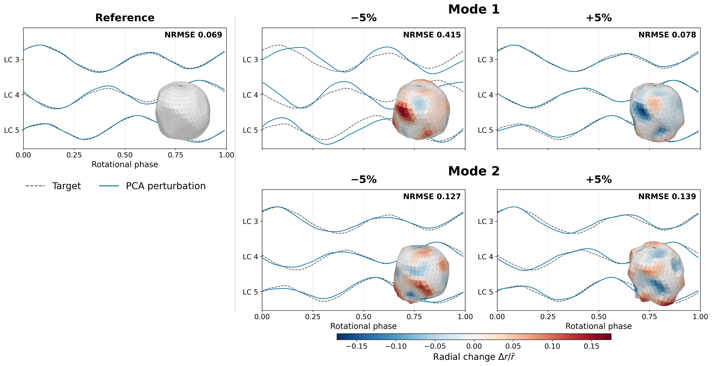
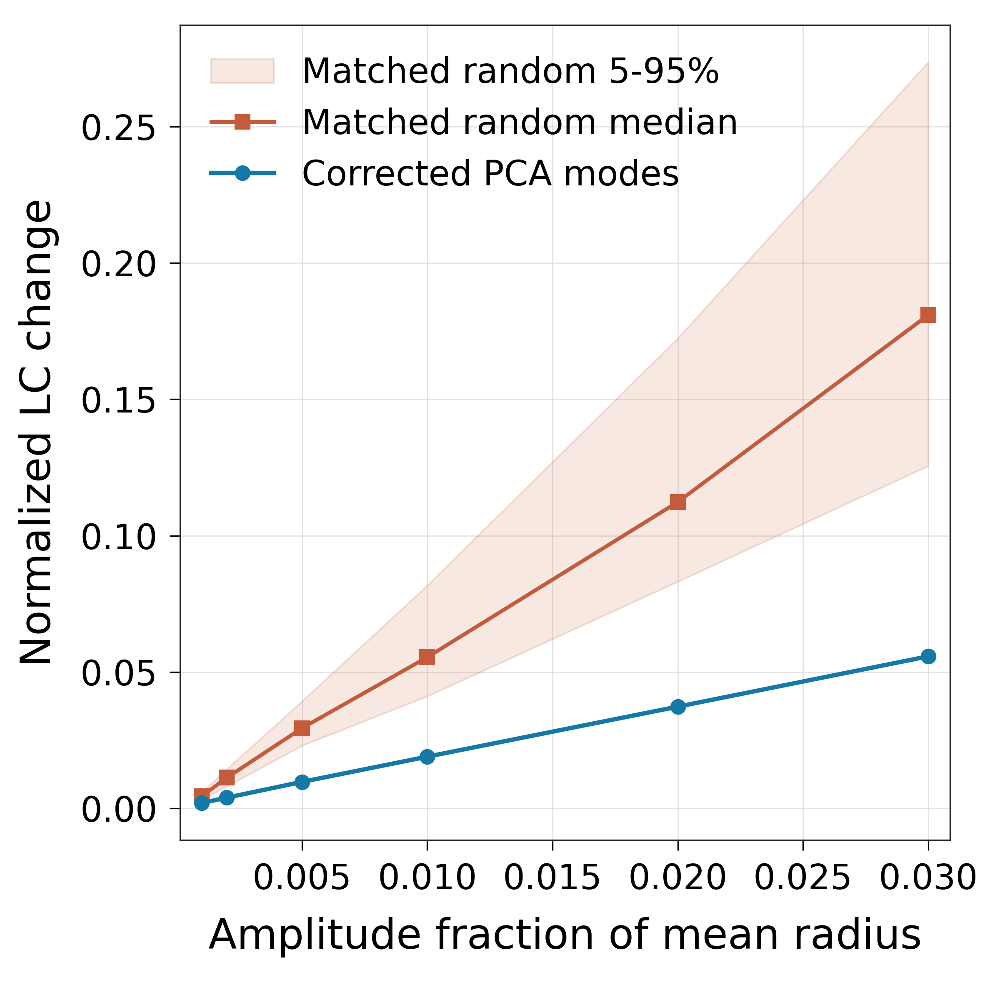

Excellence Award · KAS Fall 2026 · PSS02
Inverse problems · Scientific machine learning
Neural-Surrogate-Guided Asteroid Lightcurve Inversion: Shape Reconstruction and Photometric Degeneracy
A neural surrogate proposes local shape changes, and a physical lightcurve simulator evaluates them. The resulting sequential reshaping procedure explores both photometric reconstruction and the shape ambiguity that remains after a good fit.
View poster (PDF)Key results
- Low lightcurve errors for most synthetic samples. Median sample-mean and worst-lightcurve target-amplitude RMSE are 0.0514 and 0.0632, respectively, for the best recovered states. A high-error tail remains.
- Viewing geometry matters. Reconstruction error generally increases as observer aspect moves away from near-equator viewing (90°) in the tested geometry bank.
- A good fit leaves shape ambiguity. Empirical PCA modes reveal weakly constrained deformations. In the finite-amplitude tests, corrected PCA directions produce smaller photometric changes than first-order-matched random directions.
Background & inverse problem
Can we reconstruct an asteroid's three-dimensional shape from disk-integrated lightcurves? As an unresolved asteroid rotates, its brightness depends on shape, illumination, and viewing direction. Combining observations at different orbital positions adds complementary geometric information [1], [2].

The forward map takes a shape \(\mathbf r\) and observing geometries \(\Gamma\) to lightcurves \(\mathbf L(\mathbf r;\Gamma)\). The inverse mapping is generally non-unique: different shapes can reproduce almost the same photometry. This project examines both reconstruction quality and the remaining shape freedom.
Sequential reformulation
The shape is a polyhedron on a \(\theta\)–\(\phi\) radius grid, with discrete local cutting actions. Rather than optimize every radius simultaneously, the method searches for useful local deformations and applies them sequentially:
This sequence is an optimization strategy; the finite search does not establish a global minimizer or a uniquely correct three-dimensional shape.
Neural-surrogate-guided reconstruction
A state combines the current radius array, target lightcurve, modeled lightcurve, and observing geometry. An action selects a cutting location \((\phi_a,\theta_a)\). The neural surrogate predicts how promising that local modification is, and a physical lightcurve simulator evaluates proposed actions.
- Generate synthetic lightcurves. Combine shape polyhedra and Sun–asteroid–observer geometries in a forward simulator.
- Learn an improvement surrogate. Simulation-derived state–action labels teach the model which local cuts are promising.
- Predict reward maps. A 2D CNN reads the radius grid, a 1D CNN compares lightcurves, and geometry/action features identify the proposed cut. Evaluating candidate locations forms a reward map.
- Search, verify, and cut. Physically simulate proposed changes, apply a selected modification, recompute the modeled curves, and repeat.

The surrogate provides fast action-conditioned scores; simulator verification determines the physical fit. The implementation uses supervised improvement regression. Its state/action/reward terminology does not imply that the surrogate is a reinforcement-learning policy.
Evaluated setup and interpretation
The verified mock branch uses randomly cut ellipsoidal targets, seven lightcurves with 100 rotation samples each, and a sphere-initialized inversion. Shape information is stored on a 40 × 20 radius grid.
The current selector diversifies candidate cuts and evaluates a combination of lightcurve scores. Its acceptance rule does not establish strict monotonic decrease of a single matched objective at every step.
Reconstruction performance
Error distributions
Most synthetic samples reach low lightcurve errors. For the best recovered states, the median sample-mean target-amplitude RMSE is 0.0514, and the median worst-lightcurve error is 0.0632. A high-error tail remains for difficult or strongly degenerate cases.

Representative lightcurve fits
The examples span low, moderate, and high fitting errors. Agreement between target and reconstructed brightness curves measures photometric success under the tested geometry; it does not establish geometric uniqueness.

Dependence on viewing geometry
Reconstruction is most accurate for near-equator viewing. Error generally increases with observer-aspect deviation from 90° in the tested geometry bank. This connects inversion difficulty to which parts of the shape the observations can constrain.

| NRMSE range | Interpretation |
|---|---|
| 0.02–0.05 | Excellent |
| 0.05–0.10 | Good |
| 0.10–0.20 | Moderate |
| 0.20–0.40 | Mismatch |
| > 0.40 | Poor |
These labels are reading aids rather than universal thresholds. Figure 3 uses RMSE normalized by target peak-to-peak amplitude. The PCA-panel NRMSE is a separate metric; neither is a direct error in the reconstructed shape.
Photometric degeneracy
Equivalent and feasible shape families
For fixed observing geometries, let \(\mathcal F:\mathcal R\to\mathcal L\) map the radius parameters to modeled lightcurves. Shapes with identical photometry form an equivalent family; allowing a tolerance \(\epsilon\) gives a larger photometrically feasible family:
The scientific question becomes: which deformations leave the lightcurves nearly unchanged? Infinitesimally, a direction satisfying \(J_{\mathcal F}(\mathbf r_0)\,\delta\mathbf r\approx0\) is a first-order photometric null direction.
Constructing an empirical family
Different choices of local actions lead from the initial sphere to different photometrically feasible shapes. Principal component analysis of these solutions extracts empirical deformation modes:

The modes describe variation in the recovered solution family. They are neither an exact Jacobian null-space basis nor a complete enumeration of all feasible shapes.

The poster's ±5% tests show that different modes have different photometric consequences: Mode 1 causes larger lightcurve deviations, while Mode 2 causes smaller changes. Substantial shape variation can therefore remain weakly constrained after fitting the available lightcurves.
Higher-order sensitivity
A first-order null direction only describes infinitesimal behavior. For a finite perturbation \(c\mathbf p\), second-order and higher terms can change the lightcurves:
The feasible family cannot generally be replaced by the affine subspace \(\mathbf r_0+V_{\rm PCA}\). Even so, the finite-amplitude comparison finds that corrected PCA modes remain photometrically flatter than first-order-matched random directions at the same perturbation amplitude.

This supports finite-amplitude persistence of empirical weak modes under the tested setup; it does not reconstruct the entire nonlinear feasible family.
Conclusions & next steps
Sequential reshaping turns lightcurve inversion into a way to probe which shape degrees of freedom are actually constrained by photometry.
- Efficient inversion: neural surrogate guidance enables sequential asteroid-shape reconstruction.
- From one solution to a family: different reshaping trajectories expose multiple photometrically feasible shapes.
- Information content: PCA reveals empirical weak deformation modes that remain unusually insensitive beyond the infinitesimal regime.
Caveats and future work
The results are primarily based on synthetic data, and degeneracy depends on observing geometry and model assumptions. Next steps are validation with real asteroid lightcurves, broader observing geometries, and quantifying how additional observations reduce the feasible deformation space.
Poster references
- Kaasalainen, M. & Torppa, J. (2001). Icarus, 153, 24–36.
- Kaasalainen, M., Torppa, J. & Muinonen, K. (2001). Icarus, 153, 37–51.
- Nikolenko, S. I. (2019). arXiv:1909.11512.
- Dulac-Arnold, G., Evans, R., Sunehag, P. & Coppin, B. (2015). arXiv:1512.07679.
- Silver, D., Schrittwieser, J., Simonyan, K. et al. (2017). Nature, 550, 354–359.